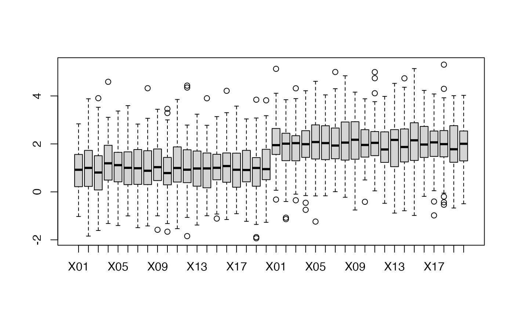
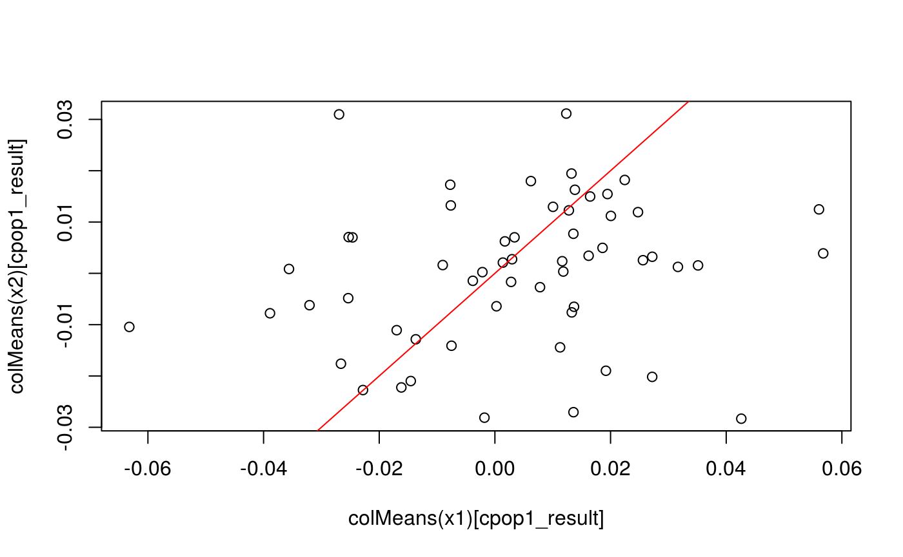
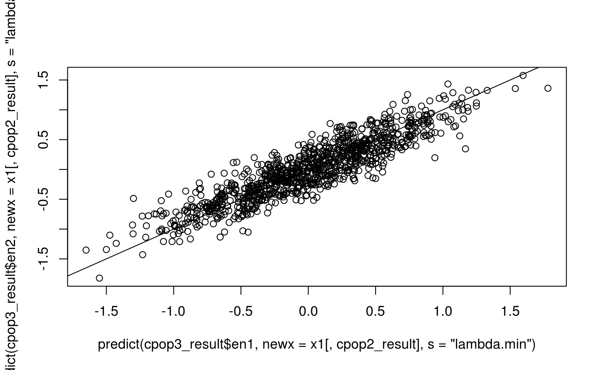
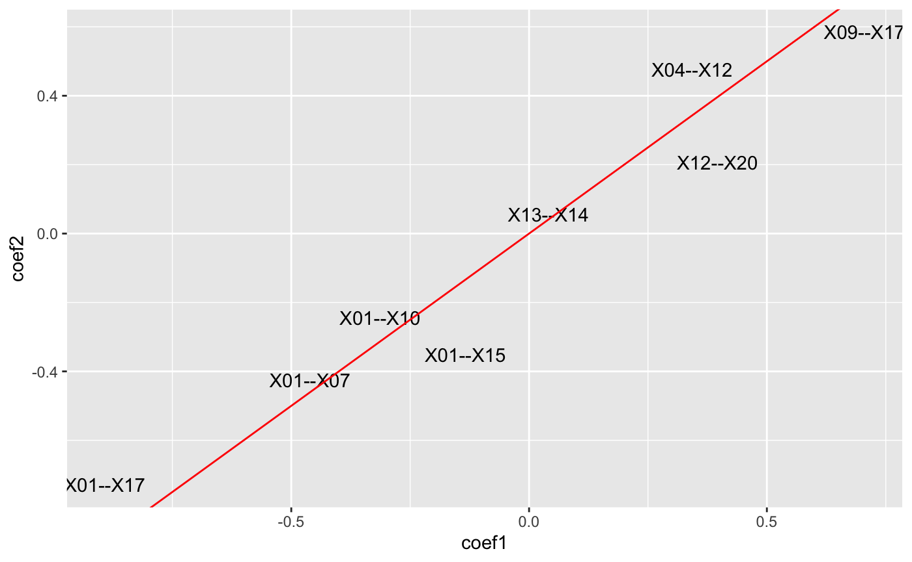
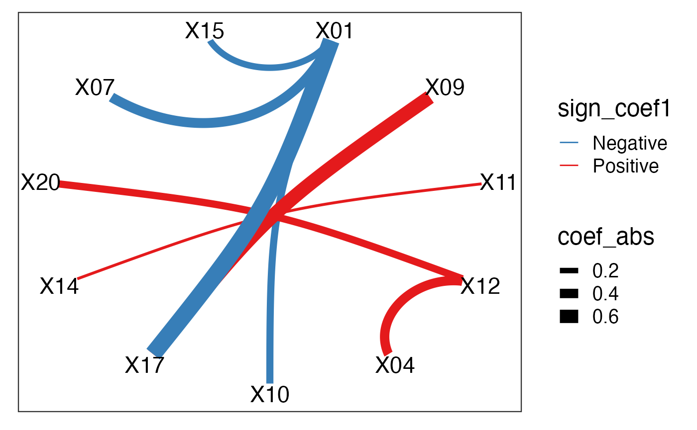

An introduction to the cpop package
Kevin Y.X. Wang
School of Mathematics and Statistics, The University of Sydney, AustraliaCPOP.Rmd##
## Attaching package: 'dplyr'## The following objects are masked from 'package:stats':
##
## filter, lag## The following objects are masked from 'package:base':
##
## intersect, setdiff, setequal, unionsigma1 = (matrix(rnorm(p * p, mean = 1, sd = 1), nrow = p, ncol = p) %>% Matrix::nearPD())$mat %>% as.matrix() %>% cov2cor()
sigma2 = (matrix(rnorm(p * p, mean = 5, sd = 1), nrow = p, ncol = p) %>% Matrix::nearPD())$mat %>% as.matrix() %>% cov2cor()
# x1 = matrix(rnorm(n * p, mean = 0, sd = 1), nrow = n, ncol = p)
# x2 = x1 + 0.2
x1 = mvtnorm::rmvnorm(n = n, sigma = sigma1)
x2 = mvtnorm::rmvnorm(n = n, sigma = sigma2)
sigma1[1:5, 1:5]## [,1] [,2] [,3] [,4] [,5]
## [1,] 1.0000000 0.2183731 0.1879947 0.4507799 0.4080451
## [2,] 0.2183731 1.0000000 0.2169021 0.2334969 0.4026574
## [3,] 0.1879947 0.2169021 1.0000000 0.3388525 0.0160735
## [4,] 0.4507799 0.2334969 0.3388525 1.0000000 0.3298534
## [5,] 0.4080451 0.4026574 0.0160735 0.3298534 1.0000000## [,1] [,2] [,3] [,4] [,5]
## [1,] 1.0000000 0.5869847 0.6240197 0.5232686 0.6153168
## [2,] 0.5869847 1.0000000 0.6104769 0.5929620 0.5469960
## [3,] 0.6240197 0.6104769 1.0000000 0.5984543 0.6412884
## [4,] 0.5232686 0.5929620 0.5984543 1.0000000 0.5093101
## [5,] 0.6153168 0.5469960 0.6412884 0.5093101 1.0000000colnames(x1) = colnames(x2) = paste0("X", 1:p)
k = 2
beta = c(rep(0.4, k), rep(0, p - k))
expit = function(x) 1/(1+exp(-x))
y1 = rbinom(n, 1, prob = expit(x1 %*% beta))
y2 = rbinom(n, 1, prob = expit(x2 %*% beta))
table(y1)## y1
## 0 1
## 495 505## y2
## 0 1
## 498 502## [1] 0.01822394
# z1 = pairwise_col_diff(x1)
# z2 = pairwise_col_diff(x2)
w = compute_weights(x1, x2)
nIter = 20
cpop1_result = cpop1(x1, x2, y1, y2, w, nIter = 20, alpha = 1, s = "lambda.min")## CPOP1 - Step: 01: Number of selected features: 0 out of 100## CPOP1 - Step: 02: Number of selected features: 4 out of 100## CPOP1 - Step: 03: Number of selected features: 14 out of 100## CPOP1 - Step: 04: Number of selected features: 25 out of 100## CPOP1 - Step: 05: Number of selected features: 33 out of 100## CPOP1 - Step: 06: Number of selected features: 37 out of 100## CPOP1 - Step: 07: Number of selected features: 41 out of 100## CPOP1 - Step: 08: Number of selected features: 48 out of 100## CPOP1 - Step: 09: Number of selected features: 57 out of 100## 50 features was reached.## A total of 57 features were selected.plot(colMeans(x1)[cpop1_result], colMeans(x2)[cpop1_result])
CPOP::identityDist(colMeans(x1)[cpop1_result], colMeans(x2)[cpop1_result])## [1] 0.008314006
s = "lambda.min"
cpop2_result = cpop2_sign(x1, x2, y1, y2, cpop1_result = cpop1_result, s = "lambda.min", nIter = 20, intercept = FALSE)## CPOP2 - Sign: Step 01: Number of leftover features: 25 out of 57## The sign matrix between the two data:##
## -1 0 1
## -1 0 0 18
## 0 0 0 0
## 1 14 0 0## CPOP2 - Sign: Step 02: Number of leftover features: 17 out of 57
## The sign matrix between the two data:##
## -1 0 1
## -1 0 0 5
## 0 0 0 0
## 1 3 0 0## CPOP2 - Sign: Step 03: Number of leftover features: 17 out of 57
## The sign matrix between the two data:##
## -1 0 1
## -1 0 0 0
## 0 0 0 0
## 1 0 0 0plot(colMeans(x1)[cpop2_result], colMeans(x2)[cpop2_result])
CPOP::identityDist(colMeans(x1)[cpop2_result], colMeans(x2)[cpop2_result])## [1] 0.008112304
cpop3_result = cpop3(x1, x2, y1, y2, cpop2_result = cpop2_result, intercept = FALSE)
plot(predict(cpop3_result$en1, newx = x1[,cpop2_result], s = "lambda.min"),
predict(cpop3_result$en2, newx = x1[,cpop2_result], s = "lambda.min"))
abline(a = 0, b = 1)
CPOP::identityDist(
predict(cpop3_result$en1, newx = x1[,cpop2_result], s = "lambda.min"),
predict(cpop3_result$en2, newx = x1[,cpop2_result], s = "lambda.min"))## [1] 0.1108214CPOP::plot_cpop_coef(cpop3_result, type = "scatter")
CPOP::plot_cpop_coef(cpop3_result, type = "bar")

Ridge on all features
lasso1 = glmnet::cv.glmnet(
x = x1,
y = y1,
family = "binomial", alpha = 0)
lasso2 = glmnet::cv.glmnet(
x = x2,
y = y2,
family = "binomial", alpha = 0)
plot(predict(lasso1, newx = x1, s = "lambda.min"),
predict(lasso2, newx = x1, s = "lambda.min"))
abline(a = 0, b = 1)
CPOP::identityDist(
predict(lasso1, newx = x1, s = "lambda.min"),
predict(lasso2, newx = x1, s = "lambda.min"))## [1] 0.1800576Ridge on Step1 features
lasso1 = glmnet::cv.glmnet(
x = x1[,cpop1_result],
y = y1,
family = "binomial", alpha = 0)
lasso2 = glmnet::cv.glmnet(
x = x2[,cpop1_result],
y = y2,
family = "binomial", alpha = 0)
plot(predict(lasso1, newx = x1[,cpop1_result], s = "lambda.min"),
predict(lasso2, newx = x1[,cpop1_result], s = "lambda.min"))
abline(a = 0, b = 1)
CPOP::identityDist(
predict(lasso1, newx = x1[,cpop1_result], s = "lambda.min"),
predict(lasso2, newx = x1[,cpop1_result], s = "lambda.min"))## [1] 0.219467boxplot(
upper_elements(cor(x1)) - upper_elements(cor(x2)),
upper_elements(cor(x1[,cpop1_result])) - upper_elements(cor(x2[,cpop1_result])),
upper_elements(cor(x1[,cpop2_result])) - upper_elements(cor(x2[,cpop2_result])))
## R version 3.6.1 (2017-01-27)
## Platform: x86_64-pc-linux-gnu (64-bit)
## Running under: Ubuntu 14.04.5 LTS
##
## Matrix products: default
## BLAS: /home/travis/R-bin/lib/R/lib/libRblas.so
## LAPACK: /home/travis/R-bin/lib/R/lib/libRlapack.so
##
## locale:
## [1] LC_CTYPE=en_US.UTF-8 LC_NUMERIC=C
## [3] LC_TIME=en_US.UTF-8 LC_COLLATE=en_US.UTF-8
## [5] LC_MONETARY=en_US.UTF-8 LC_MESSAGES=en_US.UTF-8
## [7] LC_PAPER=en_US.UTF-8 LC_NAME=C
## [9] LC_ADDRESS=C LC_TELEPHONE=C
## [11] LC_MEASUREMENT=en_US.UTF-8 LC_IDENTIFICATION=C
##
## attached base packages:
## [1] stats graphics grDevices utils datasets methods base
##
## other attached packages:
## [1] dplyr_0.8.3 mvtnorm_1.0-11 Matrix_1.2-17 CPOP_0.0.18
## [5] BiocStyle_2.12.0
##
## loaded via a namespace (and not attached):
## [1] Rcpp_1.0.2 compiler_3.6.1 pillar_1.4.2
## [4] BiocManager_1.30.4 iterators_1.0.12 forcats_0.4.0
## [7] tools_3.6.1 digest_0.6.20 jsonlite_1.6
## [10] lattice_0.20-38 evaluate_0.14 memoise_1.1.0
## [13] tibble_2.1.3 gtable_0.3.0 pkgconfig_2.0.2
## [16] rlang_0.4.0 foreach_1.4.7 yaml_2.2.0
## [19] pkgdown_1.4.0 xfun_0.9 stringr_1.4.0
## [22] knitr_1.24 htmlwidgets_1.3 desc_1.2.0
## [25] fs_1.3.1 glmnet_2.0-18 rprojroot_1.3-2
## [28] grid_3.6.1 tidyselect_0.2.5 glue_1.3.1
## [31] R6_2.4.0 rmarkdown_1.15 bookdown_0.13
## [34] tidyr_0.8.3 purrr_0.3.2 ggplot2_3.2.1
## [37] magrittr_1.5 ellipsis_0.2.0.1 codetools_0.2-16
## [40] backports_1.1.4 scales_1.0.0 htmltools_0.3.6
## [43] MASS_7.3-51.4 assertthat_0.2.1 colorspace_1.4-1
## [46] labeling_0.3 proxy_0.4-23 stringi_1.4.3
## [49] visNetwork_2.0.8 lazyeval_0.2.2 munsell_0.5.0
## [52] crayon_1.3.4